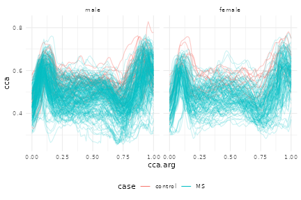
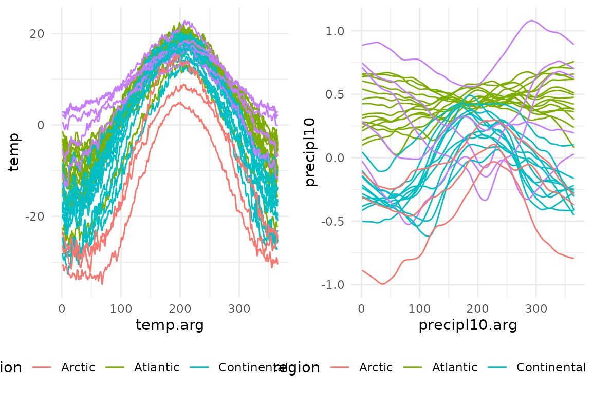
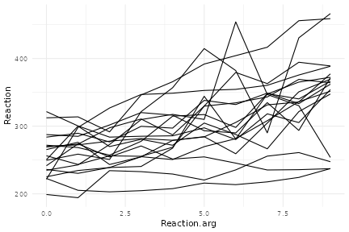
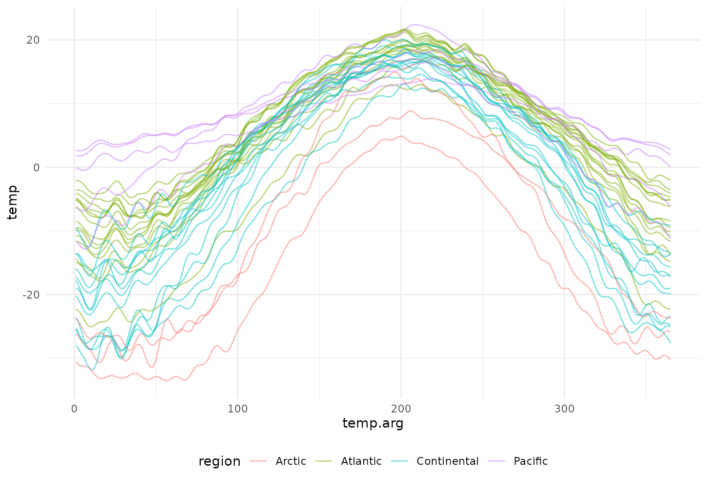

Converting to & from `tf`
Jeff Goldsmith, Fabian Scheipl
2026-03-18
Source:vignettes/x02_Conversion.Rmd
x02_Conversion.RmdFunctional data have often been stored in matrices or data frames. Although these structures have sufficed for some purposes, they are cumbersome or impossible to use with modern tools for data wrangling.
In this vignette, we illustrate how to convert data from common
structures to tf objects. Throughout, functional data
vectors are stored as columns in a data frame to facilitate subsequent
wrangling and analysis.
Conversion from matrices
One of the most common structures for storing functional data has been a matrix. Especially when subjects are observed over the same (regular or irregular) grid, it is natural to observations on a subject in rows (or columns) of a matrix. Matrices, however, are difficult to wrangle along with data in a data frame, leading to confusing and easy-to-break subsetting across several objects.
In the following examples, we’ll use tfd to get a
tf vector from matrices. The tfd function
expects data to be organized so that each row is the functional
observation for a single subject. It’s possible to focus only on the
resulting tf vector, but in keeping with the broader goals
of tidyfun we’ll add these as columns to a data frame.
The DTI data in the refund package has been
a popular example in functional data analysis. In the code below, we
create a data frame (or tibble) containing scalar
covariates, and then add columns for the cca and
rcst track profiles. This code was used to create the
tidyfun::dti_df dataset included in the package.
dti_df <- tibble(
id = refund::DTI$ID,
visit = refund::DTI$visit,
sex = refund::DTI$sex,
case = factor(ifelse(refund::DTI$case, "MS", "control"))
)
dti_df$cca <- tfd(refund::DTI$cca, arg = seq(0, 1, length.out = 93))
dti_df$rcst <- tfd(refund::DTI$rcst, arg = seq(0, 1, length.out = 55))In tfd, the first argument is a matrix; arg
defines the grid over which functions are observed. The output of
tfd is a vector, which we include in the
dti_df data frame.
dti_df
## # A tibble: 382 × 6
## id visit sex case cca
## <dbl> <int> <fct> <fct> <tfd_irreg>
## 1 1001 1 female control (0.000,0.49);(0.011,0.52);(0.022,0.54); ...
## 2 1002 1 female control (0.000,0.47);(0.011,0.49);(0.022,0.50); ...
## 3 1003 1 male control (0.000,0.50);(0.011,0.51);(0.022,0.54); ...
## 4 1004 1 male control (0.000,0.40);(0.011,0.42);(0.022,0.44); ...
## 5 1005 1 male control (0.000,0.40);(0.011,0.41);(0.022,0.40); ...
## 6 1006 1 male control (0.000,0.45);(0.011,0.45);(0.022,0.46); ...
## 7 1007 1 male control (0.000,0.55);(0.011,0.56);(0.022,0.56); ...
## 8 1008 1 male control (0.000,0.45);(0.011,0.48);(0.022,0.50); ...
## 9 1009 1 male control (0.000,0.50);(0.011,0.51);(0.022,0.52); ...
## 10 1010 1 male control (0.000,0.46);(0.011,0.47);(0.022,0.48); ...
## # ℹ 372 more rows
## # ℹ 1 more variable: rcst <tfd_irreg>Finally, we’ll make a quick spaghetti plot to illustrate that the
complete functional data is included in each tf column.
dti_df |>
tf_ggplot(aes(tf = cca, col = case, alpha = 0.2 + 0.4 * (case == "control"))) +
geom_line() +
facet_wrap(~sex) +
scale_alpha(guide = "none", range = c(0.2, 0.4))
## Warning: Large data expansion: 382 rows × 93 grid points = 35526 rows
## ℹ This may impact memory usage and plotting performance
## ℹ Use `arg` in `tf_ggplot()` to specify a coarser evaluation grid
We’ll repeat the same basic process using a second, and probably
even-more-perennial, functional data example: the Canadian weather data
in the fda package. Here, functional data are stored in a
three-dimensional array, with dimensions corresponding to day, station,
and outcome (temperature, precipitation, and log10 precipitation).
In the following, we first create a tibble with scalar
covariates, then use tfd to create functional data vectors,
and finally include the resulting vectors in the dataframe. In this
case, our args are days of the year, and we use
tf_smooth to smooth the precipitation outcome. Because the
original data matrices record the different observations in the columns
instead of the rows, we have to use their transpose in the call to
tfd:
canada <- tibble(
place = fda::CanadianWeather$place,
region = fda::CanadianWeather$region,
lat = fda::CanadianWeather$coordinates[, 1],
lon = -fda::CanadianWeather$coordinates[, 2]
) |>
mutate(
temp = t(fda::CanadianWeather$dailyAv[, , 1]) |>
tfd(arg = 1:365),
precipl10 = t(fda::CanadianWeather$dailyAv[, , 3]) |>
tfd(arg = 1:365) |>
tf_smooth()
)
## Using `f = 0.15` as smoother span for `lowess()`.The resulting data frame is shown below.
canada
## # A tibble: 35 × 6
## place region lat lon temp
## <chr> <chr> <dbl> <dbl> <tfd_reg>
## 1 St. Johns Atlantic 47.3 -52.4 ▄▄▄▄▄▅▅▅▆▆▆▇▇▇██▇▇▇▇▆▆▆▅▅▅
## 2 Halifax Atlantic 44.4 -63.4 ▄▄▄▄▄▅▅▆▆▇▇▇██████▇▇▆▆▆▅▅▄
## 3 Sydney Atlantic 46.1 -60.1 ▄▄▄▄▄▅▅▅▆▆▇▇██████▇▇▆▆▆▅▅▄
## 4 Yarmouth Atlantic 43.5 -66.1 ▄▄▄▄▅▅▅▆▆▇▇▇▇█████▇▇▇▆▆▆▅▅
## 5 Charlottvl Atlantic 42.5 -80.2 ▄▄▃▄▄▄▅▅▆▆▇▇██████▇▇▆▆▆▅▄▄
## 6 Fredericton Atlantic 45.6 -66.4 ▃▃▃▄▄▅▅▆▆▇▇███████▇▇▆▆▅▅▄▄
## 7 Scheffervll Atlantic 54.5 -64.5 ▁▁▁▁▂▂▃▄▄▅▆▆▇▇▇▇▇▆▆▅▅▄▄▃▂▁
## 8 Arvida Atlantic 48.3 -71.1 ▂▂▂▃▃▄▅▆▆▇▇███████▇▆▆▆▅▄▃▃
## 9 Bagottville Atlantic 48.2 -70.5 ▂▂▂▃▃▄▅▅▆▇▇▇█████▇▇▆▆▅▅▄▃▃
## 10 Quebec Atlantic 46.5 -71.1 ▃▃▃▃▄▄▅▆▆▇▇███████▇▇▆▆▅▄▄▃
## # ℹ 25 more rows
## # ℹ 1 more variable: precipl10 <tfd_reg>A plot containing both functional observations is shown below.
temp_panel <- canada |>
tf_ggplot(aes(tf = temp, color = region)) +
geom_line()
precip_panel <- canada |>
tf_ggplot(aes(tf = precipl10, color = region)) +
geom_line()
gridExtra::grid.arrange(temp_panel, precip_panel, nrow = 1)
## Warning: Large data expansion: 35 rows × 365 grid points = 12775 rows
## ℹ This may impact memory usage and plotting performance
## ℹ Use `arg` in `tf_ggplot()` to specify a coarser evaluation grid
## Large data expansion: 35 rows × 365 grid points = 12775 rows
## ℹ This may impact memory usage and plotting performance
## ℹ Use `arg` in `tf_ggplot()` to specify a coarser evaluation grid
Conversion to tf from a data frame
… in “long” format
“Long” format data frames containing functional data include columns
containing a subject identifier, the functional argument, and the value
each subject’s function takes at each argument. There are also often
(but not always) non-functional covariates that are repeated within a
subject. For data in this form, we use tf_nest to produce a
data frame containing a single row for each subject.
A first example is the sleepstudy data from the
lme4 package, which is a nice example from longitudinal
data analysis. This includes columns for Subject,
Days, and Reaction – which correspond to the
subject, argument, and value.
data("sleepstudy", package = "lme4")
sleepstudy <- as_tibble(sleepstudy)
sleepstudy
## # A tibble: 180 × 3
## Reaction Days Subject
## <dbl> <dbl> <fct>
## 1 250. 0 308
## 2 259. 1 308
## 3 251. 2 308
## 4 321. 3 308
## 5 357. 4 308
## 6 415. 5 308
## 7 382. 6 308
## 8 290. 7 308
## 9 431. 8 308
## 10 466. 9 308
## # ℹ 170 more rowsWe create sleepstudy_tf by nesting Reaction
within subjects. The result is a data frame containing a single row for
each curve (one per Subject) that holds two columns: the
Reaction function and the Subject ID:
sleepstudy_tf <- sleepstudy |>
tf_nest(Reaction, .id = Subject, .arg = Days)
sleepstudy_tf
## # A tibble: 18 × 2
## Subject Reaction
## <fct> <tfd_reg>
## 1 308 ▂▂▂▄▅▇▆▃▇█
## 2 309 ▁▁▁▁▁▁▁▁▁▂
## 3 310 ▁▁▂▂▂▁▂▂▂▂
## 4 330 ▄▄▃▃▃▄▃▄▄▅
## 5 331 ▃▃▄▄▄▃▃▅▃▆
## 6 332 ▂▂▃▄▄▄█▅▄▂
## 7 333 ▃▃▃▄▄▅▅▅▅▅
## 8 334 ▃▃▂▂▃▃▄▅▅▆
## 9 335 ▂▃▂▃▂▂▂▂▂▂
## 10 337 ▄▄▃▅▆▆▇▇██
## 11 349 ▂▂▂▂▂▃▃▄▅▅
## 12 350 ▂▂▂▂▃▄▆▅▆▆
## 13 351 ▂▄▃▃▃▄▃▃▄▅
## 14 352 ▁▄▄▅▅▅▅▅▆▆
## 15 369 ▃▃▂▃▄▄▄▅▅▆
## 16 370 ▁▂▂▂▃▅▃▅▆▆
## 17 371 ▃▃▃▃▃▃▂▄▅▆
## 18 372 ▃▃▄▄▃▄▅▅▆▅We’ll make a quick plot to show the result.

Alternatively, for this simple example that does not contain any additional time-varying or time-constant covariates besides the values that define the functions themselves, we could have simply done:
tibble(
Subject = unique(sleepstudy$Subject),
Reaction = tfd(sleepstudy, id = "Subject", arg = "Days", value = "Reaction")
)
## # A tibble: 18 × 2
## Subject Reaction
## <fct> <tfd_reg>
## 1 308 ▂▂▂▄▅▇▆▃▇█
## 2 309 ▁▁▁▁▁▁▁▁▁▂
## 3 310 ▁▁▂▂▂▁▂▂▂▂
## 4 330 ▄▄▃▃▃▄▃▄▄▅
## 5 331 ▃▃▄▄▄▃▃▅▃▆
## 6 332 ▂▂▃▄▄▄█▅▄▂
## 7 333 ▃▃▃▄▄▅▅▅▅▅
## 8 334 ▃▃▂▂▃▃▄▅▅▆
## 9 335 ▂▃▂▃▂▂▂▂▂▂
## 10 337 ▄▄▃▅▆▆▇▇██
## 11 349 ▂▂▂▂▂▃▃▄▅▅
## 12 350 ▂▂▂▂▃▄▆▅▆▆
## 13 351 ▂▄▃▃▃▄▃▃▄▅
## 14 352 ▁▄▄▅▅▅▅▅▆▆
## 15 369 ▃▃▂▃▄▄▄▅▅▆
## 16 370 ▁▂▂▂▃▅▃▅▆▆
## 17 371 ▃▃▃▃▃▃▂▄▅▆
## 18 372 ▃▃▄▄▃▄▅▅▆▅A second example uses the ALA::fev1 dataset.
ALA is not available on CRAN but can be installed using the
line below.
install.packages("ALA", repos = "http://R-Forge.R-project.org")In this dataset, both height and logFEV1
are observed at multiple ages for each child; that is, there are two
functions observed simultaneously, over a shared argument. We can use
tf_nest to create a dataframe with a single row for each
subject, which includes both non-functional covariates (like age and
height at baseline), and functional observations logFEV1
and height.
ALA::fev1 |> glimpse()
## Rows: 1,994
## Columns: 6
## $ id <fct> 1, 1, 1, 1, 1, 1, 1, 2, 2, 2, 2, 2, 2, 2, 2, 3, 3, 3, 3, 3, 3, 3, 3, 3, 4, 4, 4, 4, 4, 4, 4, 4, 4, 4, 5, 5, 5, …
## $ age <dbl> 9.34, 10.39, 11.45, 12.46, 13.42, 15.47, 16.37, 6.59, 7.65, 12.74, 13.77, 14.69, 15.82, 16.67, 17.63, 6.91, 7.9…
## $ height <dbl> 1.20, 1.28, 1.33, 1.42, 1.48, 1.50, 1.52, 1.13, 1.19, 1.49, 1.53, 1.55, 1.56, 1.57, 1.57, 1.18, 1.23, 1.30, 1.3…
## $ age0 <dbl> 9.34, 9.34, 9.34, 9.34, 9.34, 9.34, 9.34, 6.59, 6.59, 6.59, 6.59, 6.59, 6.59, 6.59, 6.59, 6.91, 6.91, 6.91, 6.9…
## $ height0 <dbl> 1.20, 1.20, 1.20, 1.20, 1.20, 1.20, 1.20, 1.13, 1.13, 1.13, 1.13, 1.13, 1.13, 1.13, 1.13, 1.18, 1.18, 1.18, 1.1…
## $ logFEV1 <dbl> 0.2151, 0.3716, 0.4886, 0.7514, 0.8329, 0.8920, 0.8713, 0.3075, 0.3507, 0.7561, 0.8671, 1.0473, 1.1537, 0.9243,…
ALA::fev1 |>
group_by(id) |>
mutate(n_obs = n()) |>
filter(n_obs > 1) |> ungroup() |>
tf_nest(logFEV1, height, .arg = age) |>
glimpse()
## Rows: 252
## Columns: 6
## $ id <fct> 1, 2, 3, 4, 5, 6, 7, 8, 9, 10, 11, 13, 15, 16, 18, 20, 21, 22, 23, 24, 25, 26, 27, 28, 29, 30, 31, 32, 33, 35, …
## $ age0 <dbl> 9.34, 6.59, 6.91, 6.76, 6.50, 6.90, 6.43, 7.19, 6.90, 7.79, 7.61, 7.55, 7.84, 6.51, 7.06, 7.13, 6.61, 7.37, 6.9…
## $ height0 <dbl> 1.20, 1.13, 1.18, 1.15, 1.11, 1.24, 1.18, 1.27, 1.17, 1.13, 1.32, 1.25, 1.25, 1.20, 1.19, 1.24, 1.21, 1.23, 1.2…
## $ n_obs <int> 7, 8, 9, 10, 7, 11, 7, 9, 9, 10, 6, 3, 5, 11, 12, 10, 9, 8, 12, 2, 2, 11, 11, 7, 9, 11, 11, 4, 2, 12, 3, 9, 12,…
## $ logFEV1 <tfd_irrg> ( 9.3, 0.22);(10.4, 0.37);(11.5, 0.49); ..., ( 6.6, 0.31);( 7.6, 0.35);(12.7, 0.76); ..., ( 6.9, 0.…
## $ height <tfd_irrg> ( 9.3,1.2);(10.4,1.3);(11.5,1.3); ..., ( 6.6,1.1);( 7.6,1.2);(12.7,1.5); ..., ( 6.9,1.2);( 8.0,1.2);( 9.0,…```… in “wide” format
In some cases functional data are stored in “wide” format, meaning
that there are separate columns for each argument, and values are stored
in these columns. In this case, tf_gather can be use to
collapse across columns to produce a function for each subject.
The example below again uses the refund::DTI dataset. We
use tf_gather to transfer the cca observations
from a matrix column (with NAs) into a column of
irregularly observed functions (tfd_irreg).
dti_df <- refund::DTI |>
janitor::clean_names() |>
select(-starts_with("rcst")) |>
glimpse()
## Rows: 382
## Columns: 8
## $ id <dbl> 1001, 1002, 1003, 1004, 1005, 1006, 1007, 1008, 1009, 1010,…
## $ visit <int> 1, 1, 1, 1, 1, 1, 1, 1, 1, 1, 1, 1, 1, 1, 1, 1, 1, 1, 1, 1,…
## $ visit_time <int> 0, 0, 0, 0, 0, 0, 0, 0, 0, 0, 0, 0, 0, 0, 0, 0, 0, 0, 0, 0,…
## $ nscans <int> 1, 1, 1, 1, 1, 1, 1, 1, 1, 1, 1, 1, 1, 1, 1, 1, 1, 1, 1, 1,…
## $ case <dbl> 0, 0, 0, 0, 0, 0, 0, 0, 0, 0, 0, 0, 0, 0, 0, 0, 0, 0, 0, 0,…
## $ sex <fct> female, female, male, male, male, male, male, male, male, m…
## $ pasat <int> NA, NA, NA, NA, NA, NA, NA, NA, NA, NA, NA, NA, NA, NA, NA,…
## $ cca <dbl[,93]> <matrix[26 x 93]>
dti_df |>
tf_gather(starts_with("cca")) |>
glimpse()
## creating new <tfd>-column "cca"
## Rows: 382
## Columns: 8
## $ id <dbl> 1001, 1002, 1003, 1004, 1005, 1006, 1007, 1008, 1009, 1010,…
## $ visit <int> 1, 1, 1, 1, 1, 1, 1, 1, 1, 1, 1, 1, 1, 1, 1, 1, 1, 1, 1, 1,…
## $ visit_time <int> 0, 0, 0, 0, 0, 0, 0, 0, 0, 0, 0, 0, 0, 0, 0, 0, 0, 0, 0, 0,…
## $ nscans <int> 1, 1, 1, 1, 1, 1, 1, 1, 1, 1, 1, 1, 1, 1, 1, 1, 1, 1, 1, 1,…
## $ case <dbl> 0, 0, 0, 0, 0, 0, 0, 0, 0, 0, 0, 0, 0, 0, 0, 0, 0, 0, 0, 0,…
## $ sex <fct> female, female, male, male, male, male, male, male, male, m…
## $ pasat <int> NA, NA, NA, NA, NA, NA, NA, NA, NA, NA, NA, NA, NA, NA, NA,…
## $ cca <tfd_irreg> (1,0.5);(2,0.5);(3,0.5); ..., (1,0.5);(2,0.5);(3,0.5)…Changing representation with tf_rebase
Sometimes you need to make different tf objects
compatible – for example, to combine raw observations with a basis
representation, or to ensure two functional data vectors are expressed
on the same grid or in the same basis. tf_rebase
re-expresses one tf object in the representation of
another:
# reload the tidyfun version of the DTI data
data(dti_df, package = "tidyfun")
# raw functional data
cca_raw <- dti_df$cca[1:5]
cca_raw
## irregular tfd[5]: [0,1] -> [0.3662524,0.6747586] based on 93 to 93 (mean: 93) evaluations each
## interpolation by tf_approx_linear
## 1001_1: (0.000,0.49);(0.011,0.52);(0.022,0.54); ...
## 1002_1: (0.000,0.47);(0.011,0.49);(0.022,0.50); ...
## 1003_1: (0.000,0.50);(0.011,0.51);(0.022,0.54); ...
## 1004_1: (0.000,0.40);(0.011,0.42);(0.022,0.44); ...
## 1005_1: (0.000,0.40);(0.011,0.41);(0.022,0.40); ...
# represent in a spline basis
cca_basis <- tfb(dti_df$cca[1:5], k = 25)
## Percentage of input data variability preserved in basis representation
## (per functional observation, approximate):
## Min. 1st Qu. Median Mean 3rd Qu. Max.
## 95.60 96.40 96.90 97.12 98.00 98.70
cca_basis
## tfb[5]: [0,1] -> [0.3684063,0.6796841] in basis representation:
## using s(arg, bs = "cr", k = 25, sp = -1)
## 1001_1: ▆██▆▄▃▄▄▄▄▅▅▅▅▅▄▄▂▂▂▃▅▅▆▆▆
## 1002_1: ▅▆▆▄▄▄▄▄▃▄▅▅▄▃▃▃▃▃▃▄▅▆▆▇▆▆
## 1003_1: ▆▇▆▄▃▃▃▃▃▄▃▃▄▄▄▃▃▂▃▃▃▅▆▄▇█
## 1004_1: ▃▅▇▇▆▅▅▄▅▅▅▅▅▅▅▅▄▃▃▃▃▄▅▇▇▆
## 1005_1: ▁▃▅▅▄▂▂▂▃▃▂▃▃▄▃▃▃▃▃▁▁▂▃▅▇▅
# re-express the raw data in the same basis representation
cca_rebased <- tf_rebase(cca_raw, basis_from = cca_basis)
cca_rebased
## tfb[5]: [0,1] -> [0.3684063,0.6796841] in basis representation:
## using s(arg, bs = "cr", k = 25, sp = -1)
## 1001_1: ▆██▆▄▃▄▄▄▄▅▅▅▅▅▄▄▂▂▂▃▅▅▆▆▆
## 1002_1: ▅▆▆▄▄▄▄▄▃▄▅▅▄▃▃▃▃▃▃▄▅▆▆▇▆▆
## 1003_1: ▆▇▆▄▃▃▃▃▃▄▃▃▄▄▄▃▃▂▃▃▃▅▆▄▇█
## 1004_1: ▃▅▇▇▆▅▅▄▅▅▅▅▅▅▅▅▄▃▃▃▃▄▅▇▇▆
## 1005_1: ▁▃▅▅▄▂▂▂▃▃▂▃▃▄▃▃▃▃▃▁▁▂▃▅▇▅
# or convert a spline-based representation to a grid-based one for a specific grid:
tf_rebase(cca_basis, basis_from = cca_raw)
## irregular tfd[5]: [0,1] -> [0.3684063,0.6796841] based on 93 to 93 (mean: 93) evaluations each
## interpolation by tf_approx_linear
## 1001_1: (0.000,0.49);(0.011,0.52);(0.022,0.54); ...
## 1002_1: (0.000,0.47);(0.011,0.49);(0.022,0.51); ...
## 1003_1: (0.000,0.49);(0.011,0.52);(0.022,0.55); ...
## 1004_1: (0.000,0.41);(0.011,0.42);(0.022,0.44); ...
## 1005_1: (0.000, 0.4);(0.011, 0.4);(0.022, 0.4); ...This is useful when you want to ensure that operations between
tf objects (e.g., addition, comparison) use a common
representation, or when you want to convert between tfd and
tfb representations while matching a specific basis
configuration. It is required for many operations that would otherwise
not be well-defined.
Splitting and combining functions
tf_split separates each function into fragments defined
on sub-intervals of its domain, and tf_combine joins
fragments back together. This is useful for analyzing specific parts of
a function separately or for stitching together functional observations
from different sources.
# split CCA profiles at their midpoint
cca_halves <- tf_split(dti_df$cca[1:10], splits = 0.5)
# result is a list of tf vectors, one per segment
cca_halves[[1]]
## tfd[10]: [0,0.5] -> [0.3860009,0.6894555] based on 47 evaluations each
## interpolation by tf_approx_linear
## 1001_1: ▄▅▆▇█▇▇▆▅▃▃▃▃▃▄▄▄▄▄▄▄▄▄▄▄▄
## 1002_1: ▃▄▅▆▆▅▅▃▃▃▄▄▄▄▄▃▃▃▃▃▄▅▅▅▄▄
## 1003_1: ▄▅▇▇▇▆▅▄▃▃▃▃▃▃▃▃▃▃▃▃▃▃▃▃▃▃
## 1004_1: ▁▂▃▄▅▆▆▆▆▅▄▅▅▄▄▄▄▅▄▄▅▅▅▅▅▄
## 1005_1: ▁▁▁▂▃▄▅▅▅▄▂▂▁▂▂▂▂▂▂▂▂▂▂▃▃▃
## 1006_1: ▂▂▃▃▄▅▆▆▆▆▅▄▄▄▄▄▄▄▄▄▅▅▅▅▅▄
## [....] (4 not shown)
cca_halves[[2]]
## tfd[10]: [0.5,1] -> [0.3662524,0.7028992] based on 47 evaluations each
## interpolation by tf_approx_linear
## 1001_1: ▅▅▅▄▄▄▄▄▃▃▂▂▂▂▂▃▄▄▅▅▅▆▆▆▆▆
## 1002_1: ▄▃▃▃▃▃▃▃▃▃▃▃▃▃▄▄▅▅▆▆▆▆▆▆▆▆
## 1003_1: ▄▄▄▄▄▃▃▃▂▂▂▃▃▃▃▃▄▅▅▅▅▃▅▆▇█
## 1004_1: ▄▄▅▅▄▄▄▄▄▃▃▂▂▂▃▃▄▄▄▅▆▆▆▆▆▆
## 1005_1: ▃▄▄▄▃▃▃▂▃▃▃▂▂▂▁▁▁▂▂▃▃▄▆▆▆▅
## 1006_1: ▄▅▅▅▅▄▄▄▄▄▄▄▅▅▅▅▆▆▇▆▇▆▆▅▅▄
## [....] (4 not shown)
# recombine
cca_recombined <- tf_combine(cca_halves[[1]], cca_halves[[2]])
## ! removing 10 duplicated points from input data.
cca_recombined
## tfd[10]: [0,1] -> [0.3662524,0.7028992] based on 93 evaluations each
## interpolation by tf_approx_linear
## 1: ▄▇▇▆▄▃▃▄▄▄▄▄▄▅▄▄▄▃▂▂▂▄▅▅▆▆
## 2: ▄▆▆▄▃▄▄▄▃▃▄▅▄▃▃▃▃▃▃▄▄▅▆▆▆▆
## 3: ▄▇▆▄▃▃▃▃▃▃▃▃▃▄▄▃▃▂▃▃▃▄▅▄▅█
## 4: ▂▄▆▆▆▅▅▄▄▄▅▅▅▄▅▄▄▃▃▂▃▄▄▆▆▆
## 5: ▁▂▄▅▄▂▂▂▂▃▂▃▃▄▄▃▂▃▃▂▁▁▃▄▆▆
## 6: ▃▄▅▆▆▅▄▄▄▄▅▅▅▅▅▅▄▄▄▅▅▆▆▆▆▄
## [....] (4 not shown)Conversion from fda objects
The fda package represents functional data as
fd objects (basis function coefficients + basis
definition). tf can convert these directly using
tfb_spline, which re-expresses the fd basis in
tf’s spline framework. This also works for
fdSmooth objects returned by
fda::smooth.basis.
# create an fd object from the Canadian weather data
weather_basis <- fda::create.fourier.basis(c(0, 365), nbasis = 65)
weather_fd <- fda::smooth.basis(
argvals = 1:365,
y = fda::CanadianWeather$dailyAv[, , 1],
fdParobj = weather_basis
)
# convert fdSmooth to tfb
weather_tf <- tfb_spline(weather_fd)
## Percentage of input data variability preserved in basis representation
## (per functional observation, approximate):
## Min. 1st Qu. Median Mean 3rd Qu. Max.
## 100 100 100 100 100 100
weather_tf[1:3]
## tfb[3]: [0,365] -> [-7.867481,19.46969] in basis representation:
## using s(arg, bs = "fourier", k = 65, sp = NA, xt = list(period = 365))
## St. Johns: ▁▁▁▁▂▃▃▃▄▅▅▆▇▇██▇▇▆▅▅▄▃▃▂▂
## Halifax : ▁▁▁▁▂▃▃▄▅▆▇▇█████▇▇▆▅▅▃▃▂▁
## Sydney : ▁▁▁▁▂▃▃▄▄▅▆▇▇████▇▆▆▅▄▄▃▂▂The resulting tfb object can then be used with all
tidyfun tools:
tibble(
place = fda::CanadianWeather$place,
region = fda::CanadianWeather$region,
temp = weather_tf
) |>
tf_ggplot(aes(tf = temp, color = region)) +
geom_line(alpha = 0.5)
## Warning: Large data expansion: 35 rows × 365 grid points = 12775 rows
## ℹ This may impact memory usage and plotting performance
## ℹ Use `arg` in `tf_ggplot()` to specify a coarser evaluation grid
Reversing the conversion
tidyfun includes a wide range of tools
for exploratory analysis and visualization, but many analysis approaches
require data to be stored in more traditional formats. Several functions
are available to aid in this conversion.
Conversion from tf to data frames
The functions tf_unnest and tf_spread
reverse the operations in tf_nest and
tf_gather, respectively – that is, they take a data frame
with a functional observation and produce long or wide data frames.
We’ll illustrate these with the sleepstudy_tf data set.
First, to produce a long-format data frame, one can use
tf_unnest:
sleepstudy_tf |>
tf_unnest(cols = Reaction) |>
glimpse()
## Rows: 180
## Columns: 3
## $ Subject <fct> 308, 308, 308, 308, 308, 308, 308, 308, 308, 308, 309, …
## $ Reaction_arg <dbl> 0, 1, 2, 3, 4, 5, 6, 7, 8, 9, 0, 1, 2, 3, 4, 5, 6, 7, 8…
## $ Reaction_value <dbl> 249.5600, 258.7047, 250.8006, 321.4398, 356.8519, 414.6…To produce a wide-format data frame, one can use
tf_spread:
sleepstudy_tf |>
tf_spread() |>
glimpse()
## Rows: 18
## Columns: 11
## $ Subject <fct> 308, 309, 310, 330, 331, 332, 333, 334, 335, 337, 349, 350,…
## $ Reaction_0 <dbl> 249.5600, 222.7339, 199.0539, 321.5426, 287.6079, 234.8606,…
## $ Reaction_1 <dbl> 258.7047, 205.2658, 194.3322, 300.4002, 285.0000, 242.8118,…
## $ Reaction_2 <dbl> 250.8006, 202.9778, 234.3200, 283.8565, 301.8206, 272.9613,…
## $ Reaction_3 <dbl> 321.4398, 204.7070, 232.8416, 285.1330, 320.1153, 309.7688,…
## $ Reaction_4 <dbl> 356.8519, 207.7161, 229.3074, 285.7973, 316.2773, 317.4629,…
## $ Reaction_5 <dbl> 414.6901, 215.9618, 220.4579, 297.5855, 293.3187, 309.9976,…
## $ Reaction_6 <dbl> 382.2038, 213.6303, 235.4208, 280.2396, 290.0750, 454.1619,…
## $ Reaction_7 <dbl> 290.1486, 217.7272, 255.7511, 318.2613, 334.8177, 346.8311,…
## $ Reaction_8 <dbl> 430.5853, 224.2957, 261.0125, 305.3495, 293.7469, 330.3003,…
## $ Reaction_9 <dbl> 466.3535, 237.3142, 247.5153, 354.0487, 371.5811, 253.8644,…Converting back to a matrix or data frame
To convert tf vector to a matrix with each row
containing the function evaluations for one function, use
as.matrix:
reaction_matrix <- sleepstudy_tf |> pull(Reaction) |> as.matrix()
head(reaction_matrix)
## 0 1 2 3 4 5 6 7
## 308 249.5600 258.7047 250.8006 321.4398 356.8519 414.6901 382.2038 290.1486
## 309 222.7339 205.2658 202.9778 204.7070 207.7161 215.9618 213.6303 217.7272
## 310 199.0539 194.3322 234.3200 232.8416 229.3074 220.4579 235.4208 255.7511
## 330 321.5426 300.4002 283.8565 285.1330 285.7973 297.5855 280.2396 318.2613
## 331 287.6079 285.0000 301.8206 320.1153 316.2773 293.3187 290.0750 334.8177
## 332 234.8606 242.8118 272.9613 309.7688 317.4629 309.9976 454.1619 346.8311
## 8 9
## 308 430.5853 466.3535
## 309 224.2957 237.3142
## 310 261.0125 247.5153
## 330 305.3495 354.0487
## 331 293.7469 371.5811
## 332 330.3003 253.8644
# argument values of input data saved in `arg`-attribute:
attr(reaction_matrix, "arg")
## [1] 0 1 2 3 4 5 6 7 8 9To convert a tf vector to a standalone data frame with
"id","arg","value"-columns, use
as.data.frame() with unnest = TRUE:
sleepstudy_tf |> pull(Reaction) |>
as.data.frame(unnest = TRUE) |>
head()
## id arg value
## 308.1 308 0 249.5600
## 308.2 308 1 258.7047
## 308.3 308 2 250.8006
## 308.4 308 3 321.4398
## 308.5 308 4 356.8519
## 308.6 308 5 414.6901